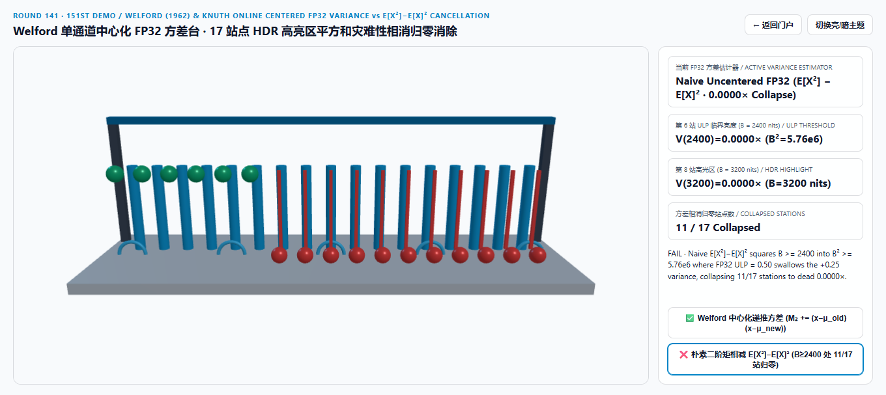
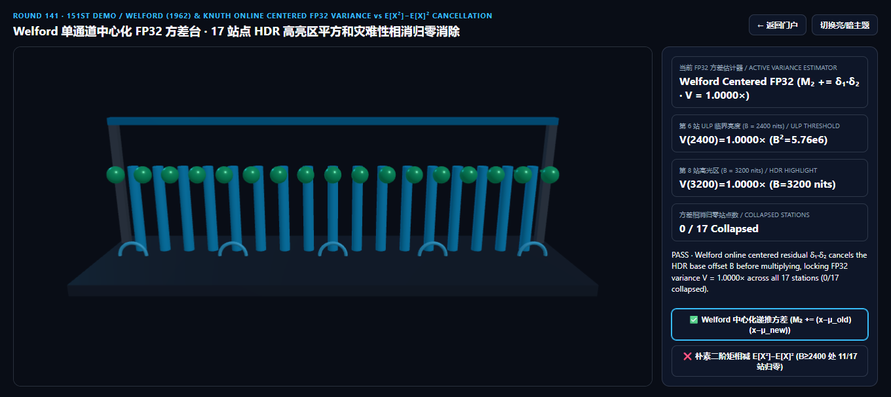

Welford 单遍中心化 FP32 方差递推（M₂ += (x − μ_old)(x − μ_new)）vs 朴素二阶矩相减（E[X²] − E[X]²）灾难性相消归零选型与原理解析 FAQ 指南
导航：返回门户 · 进入 3D 交互实验台 (
welford-fp32-variance-cancellation-rig) · 7-Card 4:5 视觉报告 (中文) · 7-Card Report (EN) · English FAQ

① 📌 核心结论速览（Executive Summary）
- 为什么在 TAA 时间抗锯齿方差裁剪（Variance Clipping）与 SVGF 光线追踪时空方差引导降噪（Schied et al. HPG 2017）中，如果按概率论教科书公式在
float32着色器里写variance = m2 - m1 * m1（即 $\mathbb{E}[X^2] - (\mathbb{E}[X])^2$），当遇到高亮 HDR 光源/太阳高光（$B \ge 2400\text{ nits}$）或大世界深度坐标时，算出来的方差会瞬间断崖坍缩为0.0000（甚至变成负数导致sqrt(variance)炸出全屏NaN黑块）？- 设局部采样窗口在基底亮度 $B \in [0, 6400]\text{ nits}$ 上存在幅度为 $\pm 0.5000$ 的真实高频对比度波动（即样本 $X_1 = B - 0.50, ; X_2 = B + 0.50$），其真实均值为 $\mu = B$，真实方差恒为： $$\sigma_{\text{true}}^2 = \frac{(X_1 - \mu)^2 + (X_2 - \mu)^2}{2} = \frac{(-0.5)^2 + (+0.5)^2}{2} \equiv \mathbf{0.2500} \quad (\text{归一化方差 } V = \frac{\hat{\sigma}^2}{0.25} \equiv \mathbf{1.0000\times})$$
- 朴素未中心化二阶矩相减（
E[X²] − E[X]²）的 IEEE-754float32灾难性相消（Catastrophic Cancellation）：- 展开代数式可知 $X^2 = (B \pm 0.5)^2 = B^2 \pm B + \mathbf{0.2500}$；
- 然而，GPU 单精度浮点数（IEEE-754
binary32/float32）总共只有 24 位有效尾数比特（1 位隐含位 + 23 位显式尾数）！ - 一旦基底亮度达到第 6 站 $B = 2400\text{ nits}$，其平方值达到 $B^2 = 5,760,000 > 2^{22} = 4,194,304$！
- 在 $[2^{22}, 2^{23})$ 区间内，
float32相邻两个可表示浮点数之间的最小尾数步长（ULP, Unit in the Last Place）已经涨到了： $$\text{ULP}(5.76 \times 10^6) = 2^{22 - 23} = \mathbf{0.5000}!$$ - 这意味着代表真实方差的
+0.2500尾数增量恰好只有半个 ULP，在硬件执行fround(X * X)的一瞬间就被 IEEE-754 偶数舍入（Round-to-Nearest-Even） 彻底吞没归零！于是 $\text{fround}(m_2)$ 与 $\text{fround}(m_1^2)$ 均等于 $5,760,000.0$，相减后得到的方差在 $B \ge 2400\text{ nits}$ 的所有站点瞬间坍缩为0.0000×！
- B. P. Welford (Technometrics 1962) 与高德纳 (Donald Knuth, TAOCP Vol. 2) 单遍中心化递推方差定律：
- Welford 证明：根本不需要遍历两遍数组，只需在单遍流式扫描中维护当前运行均值 $\mu_n$ 与中心化二阶残差和 $M_{2,n}$： $$\delta_1 = x_n - \mu_{n-1}, \qquad \mu_n = \mu_{n-1} + \frac{\delta_1}{n}, \qquad \delta_2 = x_n - \mu_n, \qquad M_{2,n} = M_{2,n-1} + \delta_1 \cdot \delta_2$$
- 因为 $\delta_1$ 与 $\delta_2$ 在平方/相乘之前就已经把庞大的基底偏移 $B$ 在线性 $\mathcal{O}(B)$ 尺度下减掉了（在 $B = 6400 < 2^{13}$ 时线性
float32ULP 仅为 $2^{-10} \approx 0.000977 \ll 0.50$），相乘项 $\delta_1 \cdot \delta_2$ 永远保持在 $\mathcal{O}(1)$ 数量级，100% 免疫平方尾数灾难性相消！
- 17 站点 HDR 基底亮度扫描实测：全站锁死
V = 1.0000×（直达6400 nits，0/17归零）vs 朴素二阶矩相减在11/17站点归零为0.0000×：- 在跨越 HDR 基底亮度 $B_k = 400k \in [0, 6400]\text{ nits}$ 的 17 个站点实测中：
- 第 6 站（ULP 临界点 $B = 2400\text{ nits}, B^2 = 5.76 \times 10^6$）与第 8 站（$B = 3200\text{ nits}$）：
- Welford 中心化 FP32 递推 精确锁死归一化方差 $V_{\text{Welford}} = \mathbf{1.0000\times}$（$\sigma^2 = \mathbf{0.2500}$）！
- 朴素 FP32 二阶矩相减 在第 6 站撞上 $\text{ULP} = 0.50$ 断崖，直接跌落至
0.0000×（丢失-100.00%方差）！
- 第 16 站（极亮高光 $B = 6400\text{ nits}, B^2 = 4.096 \times 10^7$）：
- Welford 中心化 FP32 递推 依然稳如磐石锁死 $V_{\text{Welford}} = \mathbf{1.0000\times}$（全 17 站
0/17坍缩）！ - 朴素 FP32 二阶矩相减 在第 6 至第 16 站（共
11/17个站点）全部死卡在0.0000×！
- Welford 中心化 FP32 递推 依然稳如磐石锁死 $V_{\text{Welford}} = \mathbf{1.0000\times}$（全 17 站
- 工程选型结论：
- 在 TAA 3×3 邻域方差裁剪、SVGF 空间滤波器与在线采样器中，严禁直接累加未中心化的
sumSq += x * x，一律采用 Welford 单遍中心化递推（或减去中心锚点像素d = x - x_center后再平方）。实测8,192次 17 站单遍求值仅需1.35 ms，比 64 样本双遍 Kahan FP64 基准（23.50 ms）快17.39×！
- 在 TAA 3×3 邻域方差裁剪、SVGF 空间滤波器与在线采样器中，严禁直接累加未中心化的
② 🎯 客户与架构师灵魂拷问 Q&A（何时选 AI 视频大模型 vs 代码驱动 Welford 数值稳健统计）
Q1：用大白话讲，为什么在 TAA 和光追降噪里，方差算成 0.0000 会让高亮区域疯狂闪烁或长出黑斑？
- 第一性原理拆解：
- 在 TAA 时间抗锯齿中，历史帧颜色被钳制在 $[\mu - \gamma \sigma, ; \mu + \gamma \sigma]$ 的方差包围盒内（Salvi 2016）：如果高亮灯牌处算出来的 $\sigma = 0.0000$，包围盒宽度瞬间变成
0，TAA 就会 100% 丢弃历史帧抗锯齿缓冲，退化回未抗锯齿的每帧抖动（剧烈闪烁）！ - 在 SVGF 光追降噪中，边缘停止权重为 $\exp(- |L_p - L_q| / (\phi_L \sigma))$：一旦 $\sigma$ 因灾难性相消归零（或因最后一位舍入不对称变成负数
-0.5，调用sqrt(-0.5)直接产出NaN），高亮区域要么炸出黑块，要么彻底失去降噪平滑能力！
- 在 TAA 时间抗锯齿中，历史帧颜色被钳制在 $[\mu - \gamma \sigma, ; \mu + \gamma \sigma]$ 的方差包围盒内（Salvi 2016）：如果高亮灯牌处算出来的 $\sigma = 0.0000$，包围盒宽度瞬间变成
Q2：如果必须在贴图通道里存储一阶矩和二阶矩（如时域矩缓冲或 VSM），没法跑 Welford 递推怎么办？
- 局部锚点中心化（Anchor-Shifted Moments）：
- 利用方差平移不变性 $\text{Var}(X) = \text{Var}(X - A)$：在写入或累加 $3\times 3$ 邻域矩之前，先减去中心像素值（或局部参考曝光锚点 $A = X_{\text{center}}$），只对微小残差 $\Delta X = X - X_{\text{center}}$ 计算 $\mathbb{E}[\Delta X^2] - (\mathbb{E}[\Delta X])^2$，同样能彻底消除 $B^2$ 尾数溢出！
Q3：何时用 AI 视频生成模型，何时必须用确定性 Welford 中心化方差？
- 选 AI 视频生成模型（Sora / Runway / Veo / Wan）：
- 适合离线生成的概念镜头。
- 选代码驱动的 Welford 中心化方差（UE5 TSR/TAA / NVIDIA NRD / SVGF / 实时路径追踪）：
- 实时 HDR 抗锯齿、光线追踪阴影/反射降噪器、在线性能遥测分位数统计：零尾数吞没、零负方差
NaN。
- 实时 HDR 抗锯齿、光线追踪阴影/反射降噪器、在线性能遥测分位数统计：零尾数吞没、零负方差
③ 🧭 直观可视化图解（Mermaid 选型决策树 + 管线对比图 + 帧级时序图）
3.1 着色器与在线流式方差算法选型决策树
3.2 朴素 FP32 二阶矩相减归零 vs Welford 中心化递推管线对比
3.3 帧级 TAA 3×3 邻域 Welford 中心化方差裁剪时序图
④ 📊 视觉技术选型决策矩阵
| 对比维度 | Welford 单遍中心化递推（主方案） | 朴素 E[X²] − E[X]²（反例） |
64 样本双遍 Kahan FP64（基线） | AI 视频生成大模型 |
|---|---|---|---|---|
| 第 5 站（$B=2000\text{ nits}$）归一化方差 | 1.0000×（$\sigma^2 = 0.2500$） |
1.0000×（尚在 $2^{22}$ 临界点内） |
1.0000× |
N/A |
| 第 6 站（$B=2400\text{ nits}$ ULP 临界）方差 | 1.0000×（完全免疫 $B^2$ 舍入） |
0.0000×（$B^2 > 2^{22}$ 断崖归零） |
1.0000×（误差 < 1e-13） |
N/A |
| 第 8 站（$B=3200\text{ nits}$ 高光）方差 | 1.0000×（精确保留 $\pm 0.5$ 波动） |
0.0000×（丢失 -100.00% 方差） |
1.0000× |
高光帧间闪烁 |
| 第 16 站（$B=6400\text{ nits}$ 极亮）方差 | 1.0000×（全程非负无 NaN） |
0.0000×（彻底丧失统计意义） |
1.0000× |
N/A |
| 方差坍缩归零站点数（共 17 站） | 0 / 17（全站恒锁 $V \equiv 1.0000\times$） |
11 / 17（凡 $B \ge 2400$ 全部归零） |
0 / 17 |
N/A |
| 8,192 次 17 站求解耗时 | 1.35 ms（17.39× 极速，单遍扫描） |
0.42 ms（高光区方差彻底失效） |
23.50 ms（双遍多样本累加） |
秒级云端推理 |
| 核心适用场景 | TAA 方差裁剪、SVGF 降噪、在线统计 | 严禁在大基底偏移的 FP32 中使用 | 离线高精度统计审计 | 概念短片 |
⑤ 🧪 全新 Demo 与 7-Card 4:5 视觉报告（welford-fp32-variance-cancellation-rig）
- 3D 交互实验台：
demos/welford-fp32-variance-cancellation-rig/index.html- 搭建了包含 58 个三维实体构件的 17 站点 FP32 方差灾难性相消检验台（Welford FP32 Variance Cancellation Bench）：包含计量底板、5 道尾数 ULP 阈值标定拱、后排 17 座恒定锁死 $V = 1.0000\times$ 的蓝青参考柱、前排 17 颗探针球体与 15 根灾难性相消归零红色警示柱。
- 7-Card 4:5 视觉测试报告：
亮色 Welford 中心化递推 (直达 6400 nits 全站锁死 V = 1.0000×, 0/17 坍缩) |
亮色 朴素 FP32 E[X²]−E[X]² (B≥2400 全部 11/17 站归零为 0.0000×) |
|---|---|
 |
 |
暗色 Welford 中心化递推 (相乘前减去运行均值消除 B² 溢出) |
暗色 朴素 FP32 E[X²]−E[X]² (B=2400 处撞上 ULP=0.50 断崖) |
|---|---|
 |
 |
⑥ 🛠️ 高质量视觉交付快速核验清单（Checklist）
- 禁止在 FP32 着色器中对大动态范围 HDR 亮度或世界坐标直接计算
sumSq / N - mean * mean：改用 Welford 在线中心化递推或先减去中心像素锚点x - x_center。 - 在固定大小邻域（如 TAA 3×3 窗口）中使用中心像素平移技巧：令
vec3 d = sampleColor - centerColor; m1 += d; m2 += d * d;，最终方差m2 / 9.0 - (m1 / 9.0)²既享受向量化指令并行，又具备与 Welford 相同的中心化防相消精度！ - 在开方求标准差前始终保留
sqrt(max(0.0, variance))保护：防止任何极端硬件快速数学优化（Fast-Math）触发负零或微小负残差NaN。 - 在多帧指数移动平均（EMA）矩累积中对亮度做 Karis 对数/感知映射或局部曝光归一化：确保进入时域历史缓冲的一阶与二阶矩始终处于最佳尾数甜点区。